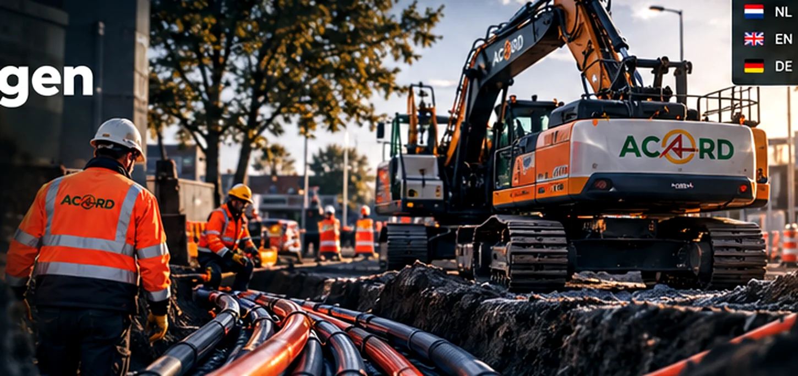

LEISTUNG / KABEL & LEITUNGEN
Kabel & Leitungen. Präzise verlegt.
Unterirdische Infrastruktur erfordert eine durchdachte Planung und sichere Ausführung.
Kabel & Leitungen. Präzise verlegt.
Wir unterstützen Kabel- und Leitungsarbeiten mit Fokus auf Zugänglichkeit, Sicherheit und sorgfältige Ausführung.
- Arbeitsvorbereitung
- Unterstützung bei Kabel- und Leitungstrassen
- Koordination auf der Baustelle
- Sorgfältige Wiederherstellung und Übergabe
ACORD / INFRA

Gemeinsam die Infrastruktur von morgen gestalten.
Von der Planung bis zum letzten Meter.
Sie planen ein Infrastrukturprojekt?
Gerne besprechen wir mit Ihnen den passenden Ansatz.